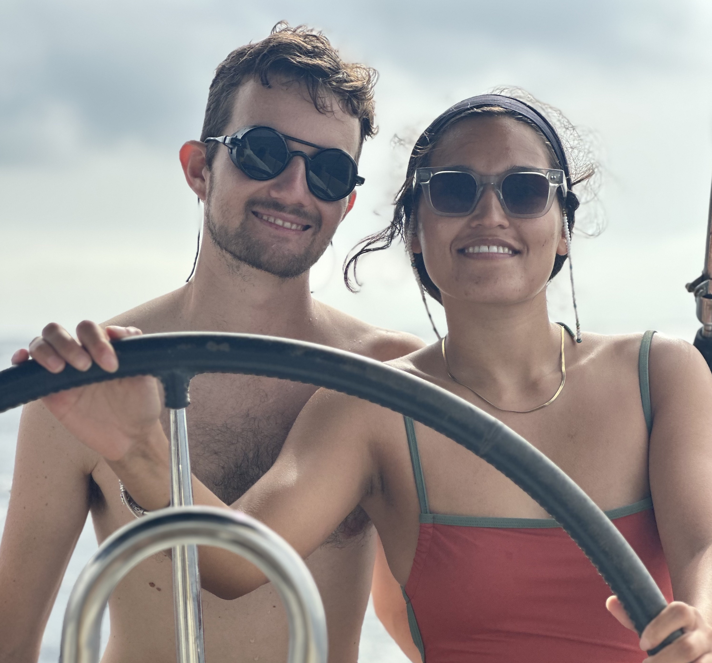

— About
Hi, we are Sélène and David!

We decided to drop everything and go live on a sailboat. This is a slow record of where we've been, drawn on a map. Each dot is a stop, each stop links to a moment — a post, a clip, a note scribbled at sea.
We hope to inspire you with our journey, follow along:
Created by Sélène Ledain, 2026.
Built with Leaflet · OpenStreetMap · ⚓